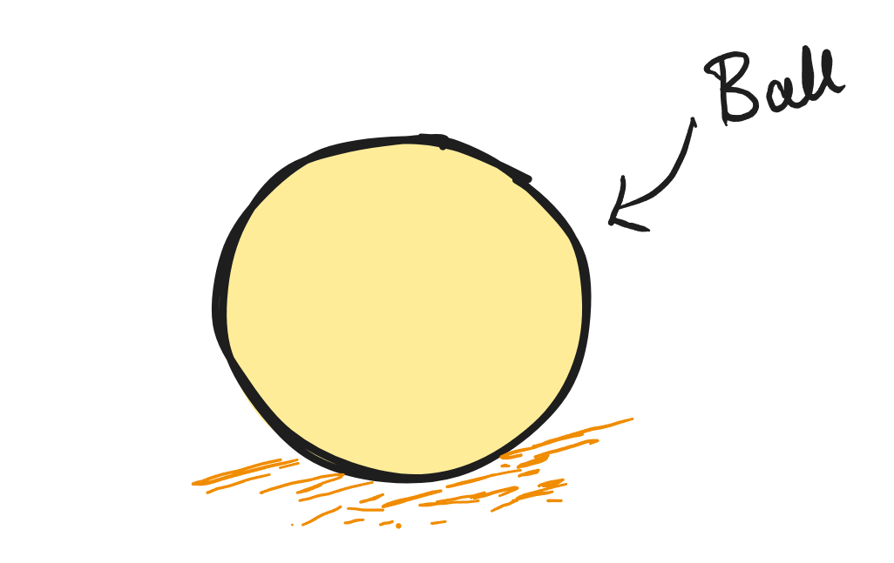

Prologue
While it is true that,
“If you wish to make an apple pie from scratch, you must first invent the universe.”
~ Carl Sagan, Cosmos
Most guides on a particular topic, not just Transformers, do very little justice to its beauty when they use the title "[Topic] from Scratch."
This guide is yet another failed attempt to teach something from scratch. However, the goal would be to assume as little prerequisites as possible.
I believe that if you want to understand something from absolute scratch, you must zoom out a lot, form an initial hypothesis about how the system might work, and then work your way up through trial and error until you reach the point you want to be at. Throughout this process, you must constantly ask yourself, "What needs to be true, given what we have right now, for us to get to the next best thing?" Luckily, with LLMs, we already have that zoomed-out experience. We all have something mysterious on our computers that can take our written text and reply so fluently that, to a regular human, it feels as though they are interacting with another human on the other side of the screen. I can't entirely blame Blake Lemoine, the former Google engineer who lost his job after publicly claiming that Google's LaMDA chatbot might be sentient. It does feel magical. And that was back in 2022! Whether AI has indeed become sentient, or whether that particular controversy was somehow a publicity stunt, is something we'll keep out of the scope of this article. Nevertheless, both are interesting topics of discussion. But let's go back in time and imagine an early human interacting with one of today's language models. I am almost certain that some would believe they had found God, discovered evidence of a higher being, or finally found a way to communicate with one. They might even use this as an argument against atheists. Some atheists and agnostics might reconsider their beliefs, too, simply because the technology would be far too advanced for them to understand how something like this could be possible. (I might be underestimating our ancestors tho.)
But that is exactly our starting point with this article. We have a mysterious box that interacts with us so fluently, and, at first glance, we can imagine two possible explanations for what is happening:
- There is an actual, higher, sentient being inside the box interacting with us. (An intuitive appeal to Occam's razor.)
- There is an extraordinarily good mechanical imitator inside the box, processing our words through a complex system in such a way that its outputs look and feel eerily similar to how a human would interact. (A more mechanistic explanation.)
Now, one might argue: "Oi! that's a wrong application of Occam's razor because, obviously, the simpler explanation is the second one. So many other assumptions need to be true for the first explanation to hold, and we don't even have evidence for them."
And they'd be right. The second explanation is indeed easier to defend, but only from our perspective as modern humans. We already know that physical systems can process information and that neural networks can learn patterns from data. We have a growing body of knowledge that helps us explain how such a system could work. When chatgpt was first released, the world's reaction was not that there is an actual higher being interacting with human fluency. we immediately associated it with "Ah! must be the technology. So advanced it is getting nowadays." [unless it was? idk] But to encounter the same box without any of that background knowledge and having no idea what computation is, what a neural network is, or how something could learn from examples. The first explanation might suddenly feel a lot more intuitive.
The following way works really well for me, and it is likely to help more who understand things this way. However, I am positive that you might discover you preferred this way of learning all along, just didn't know you did.
Questions:
-
What made us decide that the algorithm we will build, will need a lot of examples to discover patterns? (Lots of training data?)
-
How to collect and learn to store that data.
-
How do we deal with so much text?Observe and figure out what's the clever next action?
-
Deeplearning as a function:
- Single boolean Neuron (Step function as a threshold-- called activation function)
- Multiple boolean Neuron (still step function as activation)
- Multiple Neurons but using real numbers now (step function activation can be too harsh. If 0.50 is the threshol, then wdym you'll cancel your plan if it is 0.49 but accept the plan if it is 0.51. That is ridiculous.)
- So we have multiple neurons but for activation function, we will be using something more smoother than step function. Call it, sigmoid function. (How is sigmoid function invented?)
1. Text becomes a sequence of token IDs
A tokenizer breaks text into pieces from a fixed vocabulary. A piece might be a whole word, part of a word, punctuation, or whitespace. The sentence “Transformers read context” might become a sequence such as [4812, 1937, 8421]. These integers are labels, not meaningful measurements: token 4812 is not inherently “larger” or more related to token 4813.
The model looks up a learned vector for each ID. If the hidden width is d, every token starts as a point in a d-dimensional space. The sequence is now a matrix: one row per token, one column per feature. These vectors are the model’s working representation of the prompt.
2. The model needs to know where tokens are
Attention alone does not tell the model whether “the dog chased the person” differs from “the person chased the dog.” Position information supplies order. A model combines token representations with positional information, using learned position embeddings, rotary position encodings, or another scheme.
After this step, each vector carries information about both the token and its place in the sequence. The exact positional method varies across model families, but the job is the same: make order available to later computation.
3. Attention lets positions exchange information
At each layer, every position can gather information from earlier positions. First, learned linear projections turn the current representations into queries, keys, and values. A query expresses what a position is looking for; keys describe what other positions offer; values carry the information that can be passed along.
The model compares each query with the keys, scales the scores, and applies softmax to get weights. It uses those weights to form a weighted sum of values. In compact form, one attention head computes softmax(QKᵀ / √dₖ + mask)V. The mask blocks access to future tokens, so a prediction at position t cannot use tokens after t.
Why multiple heads? Each head has its own projections and can learn a different way to route information. Their outputs are joined and projected back into the model’s hidden width. Heads are not hand-assigned to concepts; their roles emerge during training and can overlap.
4. A feed-forward network transforms each position
After attention mixes information across positions, a multilayer perceptron (MLP) transforms each position’s vector independently. It usually expands the vector into a wider intermediate space, applies a nonlinear function, and projects it back. Some models use gated variants of this MLP.
Attention and the MLP do different kinds of work: attention moves information between token positions, while the MLP changes the features available at each position. A Transformer layer uses both.
5. Residual connections keep a running representation
The attention and MLP updates are added back to the stream of vectors through residual connections. Instead of replacing a token’s representation at every step, each sublayer contributes an update. Layer normalization helps keep activations in a useful range. The order of normalization and sublayers differs between architectures, but the residual stream remains a useful way to picture the evolving state.
A layer therefore looks roughly like: normalize, compute attention, add the update; normalize, compute the MLP, add that update. Stack many layers and the representation at each position becomes progressively contextualized.
6. The final representation becomes a next-token prediction
At the last position, the final vector is projected to one score per vocabulary token. These scores are called logits. Softmax turns them into probabilities. The model may choose the highest-probability token, sample from the distribution, or use another decoding rule.
Generation is autoregressive: append the selected token to the input and run the prediction again. The next step can use the earlier context, including the token just generated. A short answer is produced by repeating this loop until the model emits a stopping token or reaches a length limit.
Gradient Descent From Absolute Scratch
I say we start with a ball on a hill, become curious about its movement, and keep asking questions until we accidentally invent something called gradient descent.Let's try, shall we.

This is my ball that we are interested in. We push it. It starts at a position, let's call it Point A and after we push it, it rolls for a while until it stops. It reaches a new position. Call it Point B.

I feel it is interesting to know how fast the ball was moving throughout the journey. But what information do we need for that? At the very least, we need following two things:
- How much its position changed.
- How much time it took.
So we measure two things: 1. the distance the ball covered from Point A to Point B, and 2. the time it took to reach Point B from Point A.
Suppose the ball starts at position 0 metres and reaches position 20 metres after 5 seconds.
Its change in position is:
Its change in time is:
We divide the change in position by the change in time.
There we go. The ball moved at a rate of 4 metres per second. Now, let's notice something interesting about what we just did.
We took a quantity, measured how much it changed, and divided that change by the amount of time over which it happened.
But what exactly do we have right now? Our answer gives us only one constant-looking value, that is, 4m/s. However, we may observe that ball was not really having constant motion throughout the journey.

It doesn't tell us how fast the ball was moving at any particular moment. Maybe it started slowly, accelerated down the hill, and ended up moving very quickly. Maybe it was moving quickly at first and then slowed down. Maybe it stopped halfway through and started rolling again.
All these possibilities could give us the same average rate of 4 m/s. It tells us the ball's average rate of movement over five seconds. This is giving us a general way to describe how quickly something changes.
We are now interested in this generalizability property.
Can we build a machine in which we can throw position and timestamp as inputs and expect it throw out an approximate or actual speed at that point.
So that is our new question. How do we find the ball's speed at one particular instant?
breaker
Say we want to know how fast it was moving exactly 2 seconds after we released it.
We could calculate the average rate of movement over the first 2 seconds. But that would only tell us what happened during those 2 seconds.
We could calculate it over the first 1 second. Better, perhaps.
What about the first 0.1 seconds?
Or 0.001 seconds?
The smaller our time interval becomes, the closer we get to isolating the ball's movement around the instant we care about.
Let's give this a try.
Suppose the ball's position is described by the following function:
Here, \(t\) is time in seconds, and \(x(t)\) is the ball's position in metres. We're using an intentionally simple mathematical model to explore the idea.
At \(t=2\):
At \(t=2.1\):
So, over the next 0.1 seconds, its position changes by:
Its average rate of movement over that short interval is:
Now let's shrink the interval.
At \(t=2.01\):
Therefore,
And if we shrink it further, to 0.001 seconds, we get:
Look at the pattern.
| Time interval | Average rate of movement |
|---|---|
| 0.1 s | 4.1 m/s |
| 0.01 s | 4.01 m/s |
| 0.001 s | 4.001 m/s |
| 0.0001 s | 4.0001 m/s |
Our estimates are approaching 4 m/s.
It looks like we are getting closer and closer to the rate of movement at exactly \(t=2\).
And we haven't needed to measure the ball at a literal instant. We have approached that instant by examining smaller and smaller intervals.
But how do we turn this observation into an exact mathematical answer?
3. Can we make the interval zero?
Let's return to our original idea:
To investigate the rate at \(t=2\), we can write:
Here, \(h\) is simply the small amount of time we move forward from the instant we're investigating.
If \(h=0.1\), we examine the next 0.1 seconds.
If \(h=0.001\), we examine the next 0.001 seconds.
Now, a tempting idea occurs to us.
Why not set \(h=0\)?
That would mean examining the exact same instant.
But look at what happens:
Oops.
We've run into a mathematical problem. We cannot divide by zero.
And yet we clearly seem to be approaching a meaningful answer. Our estimates keep getting closer to 4.
So perhaps we don't need to set the interval to zero. Perhaps we need to ask a slightly different question.
What value does our expression approach as the interval gets arbitrarily close to zero?
We can express that idea using a limit:
This is the limit of our average rate of change as the interval shrinks towards zero.
For our particular function, \(x(t)=t^2\), we can simplify the expression.
As \(h\) approaches zero, \(2t+h\) approaches \(2t\).
Therefore,
At \(t=2\), this gives us exactly 4 m/s.
We have found a way to calculate the instantaneous rate of change of the ball's position.
Mathematicians call this the derivative.
More precisely, the derivative of a function \(f(x)\) is defined as:
And the process of finding a derivative is called differentiation.
We've just discovered it by trying to answer a question about a moving ball.
4. What have we actually discovered?
Let's pause for a moment.
We started with two measurements: the change in position and the change in time.
Dividing them gave us an average rate of movement.
But we wanted something more precise, so we made the interval smaller and smaller until we could determine the instantaneous rate of change.
This gave us the derivative.
For a position function \(x(t)\), its derivative with respect to time tells us the instantaneous velocity:
We use the notation \(dx/dt\) to mean the derivative of position with respect to time.
If we care about speed rather than velocity, we take the magnitude of the velocity. Velocity includes direction; speed does not.
But the really interesting part is that we haven't discovered a formula that only works for balls.
We've discovered a general tool for asking:
How quickly is this quantity changing at this particular point?
And that question is about to lead us somewhere interesting.
Part II. The Ball Has More Secrets
5. Knowing the speed isn't enough
We now know how to find the ball's velocity at any particular instant.
But suppose we want to understand its movement more deeply.
Imagine the ball is rolling down a hill. At one moment, it is moving at 4 m/s.
What happens next?
Will it be moving at 4.1 m/s? At 5 m/s? Will it slow down to 3 m/s?
Knowing its current velocity doesn't necessarily tell us what its velocity will be a moment later.
We need another piece of information.
We need to know how its velocity itself is changing.
Let's apply our newly discovered idea again.
Previously, we examined how position changed with time.
Now, instead of tracking position, let's track velocity.
Suppose our ball follows the same model:
We already found that its velocity is:
At \(t=2\), its velocity is 4 m/s.
At \(t=2.1\), its velocity is 4.2 m/s.
So the velocity changes by 0.2 m/s over 0.1 seconds.
The rate of change of velocity is:
What if we make this interval smaller and smaller, just as we did before?
We would arrive at the instantaneous rate of change of velocity.
And what do we call the rate of change of velocity?
Acceleration.
We can calculate it by taking the derivative of velocity with respect to time:
Since velocity is already the derivative of position, acceleration is the derivative of a derivative.
For our example:
The ball has constant acceleration of 2 m/s² in this mathematical model.
Notice what happened.
We wanted to understand how the ball's movement was changing, so we applied our tool for measuring rates of change to the quantity we were already studying.
The result was another derivative.
This is called the second derivative of position with respect to time.
And it gives us acceleration.
6. Can we keep going?
Of course we can.
Now we know how position changes, how velocity changes, and how acceleration changes.
But what if the acceleration isn't constant?
Imagine a rocket launching into space. Its acceleration might increase as its engines ramp up, or decrease as fuel runs low.
Suppose we know the rocket's current acceleration.
Can we tell whether its acceleration is increasing or decreasing?
We can try exactly the same trick.
Instead of tracking position, we track acceleration.
Instead of asking how quickly position changes, we ask how quickly acceleration changes.
That gives us the third derivative of position with respect to time.
Physicists call this quantity jerk.
If jerk is positive, acceleration is increasing locally. If jerk is negative, acceleration is decreasing locally.
And if jerk is zero over an interval, acceleration is constant over that interval.
We can keep going.
The fourth derivative is sometimes called snap or jounce. Higher derivatives have further uses in physics, engineering, trajectory planning, and the mathematical description of motion.
We don't need to memorize all these names. The important thing is the pattern.
- The first derivative tells us how position changes.
- The second derivative tells us how velocity changes.
- The third derivative tells us how acceleration changes.
- The fourth derivative tells us how jerk changes.
Each time, we take the quantity we just obtained and ask how that quantity changes.
And each time, our original tool gives us another layer of information.
But let's be careful about one thing.
A higher derivative doesn't automatically reveal everything about the ball, nor does it guarantee that we can predict its future. It gives us another piece of information about how the motion behaves locally.
Still, we've uncovered a powerful idea.
If we want to understand how a quantity changes, we can differentiate it. If we want to understand how that change itself behaves, we can differentiate again.
But there is a new question waiting for us.
We now know how to extract information about a function, one derivative at a time.
Can we use that information to reconstruct what the function itself is doing?
7. Can we predict where the ball will be next?
Suppose we are observing a ball at a particular instant.
We know its current position, its velocity, and its acceleration.
Can we use these measurements to estimate where it will be a short time later?
Let's think about it.
If we know the ball is currently at position \(x_0\), we already have a starting point.
If we know its velocity \(v_0\), we know how much its position would change per second if that velocity stayed constant.
So for a very small time interval \(h\), we might estimate:
This is the same reasoning behind the familiar distance-equals-speed-times-time relationship, applied over a short interval.
But what if the ball is accelerating?
Its velocity won't remain constant. It will change while we are making our prediction.
Our estimate could be better if we account for acceleration as well.
For constant acceleration, we know the familiar equation:
The first term gives us the starting position.
The second accounts for the movement we would expect from the current velocity.
The third corrects for the fact that the velocity is changing.
What if the acceleration itself is changing?
Then we might need to account for jerk, too.
This leads us to an intriguing possibility.
Perhaps we can use the derivatives at a single point to build an increasingly accurate approximation of the function around that point.
Let's see whether mathematics allows us to do that.
Part III. Reconstructing a Function From Its Derivatives
8. What happens when we keep adding information?
Let's return to our simple function:
Suppose we want to estimate its value near \(x=2\).
We know:
We also know its first derivative:
So:
This tells us that, near \(x=2\), the function increases at approximately 4 units for every one-unit increase in \(x\).
If we move from \(x=2\) to \(x=2.1\), we can estimate:
But the true value is:
We are off by 0.01.
Why?
Because our estimate assumes the function continues increasing at the same rate it was increasing at \(x=2\).
But the slope is changing, too.
We know how to measure that change. We take the second derivative.
So:
This tells us that the slope is increasing at a constant rate.
We can use this information to improve our estimate by adding a correction term:
For \(h=0.1\):
We got the exact answer!
That isn't a coincidence. Our original function is a quadratic, and its second derivative captures all the curvature we need to reconstruct it exactly.
The factor of \(1/2\) might seem to have appeared out of nowhere. It comes from the way the changing slope accumulates into a change in position. More generally, each successive derivative contributes a term with a corresponding factorial in the denominator.
Let's imagine we were working with a more complicated function.
Its second derivative might not be constant. We could take a third derivative, then a fourth, and continue adding correction terms.
The general expression we arrive at is:
If the corresponding infinite series converges to the function, this is called its Taylor series about \(x\).
There are technical conditions here. Not every infinitely differentiable function equals its Taylor series, and the series might only represent the function within a limited region. But the intuition is what matters for our journey.
The function's value tells us where we start.
Its first derivative tells us the initial slope.
Its second derivative tells us how the slope changes.
Its third derivative tells us how the curvature changes.
And so on.
Each term adds a correction based on another layer of local information.
We're using what we know at one point to build an approximation of what happens nearby.
We've gone from measuring motion to reconstructing functions.
And this is where things start getting interesting for our original goal.
Because we haven't yet said anything about machine learning.
9. What if our function has a million inputs?
So far, our function has had one input.
We choose a value of \(x\), and the function returns a value \(f(x)\).
But imagine a function with two inputs:
Here, \(w_1\) and \(w_2\) are two adjustable numbers, and \(L\) returns a single value.
We can picture this function as a landscape.
The two inputs determine our horizontal position on the landscape, and the function's output determines the height of the ground at that position.
Some locations are high. Others are low.
Our goal is to find a location where the height is as small as possible.
Why would we want to do that?
Because we can imagine this landscape representing the error of a machine learning model.
The inputs are the model's adjustable parameters, and the output is its loss: a number that tells us how poorly or well the model is performing according to some chosen objective.
We want to find parameter values that make this loss small.
In other words, we want to find a low point in the landscape.
Let's start with just two parameters so we can picture what's happening.
Later, we can imagine thousands, millions, or billions of them.
Our problem is simple to state:
We're standing somewhere on a landscape, and we want to get downhill. How do we decide where to move?
Part IV. From a Hill to a Loss Landscape
10. Which direction is downhill?
Imagine standing on a hillside with your eyes closed.
You can't see the entire landscape. You don't know where the bottom is.
You can, however, make small movements and notice whether the ground rises or falls.
If moving a little to your right takes you uphill, then right is not the direction we want to go.
If moving a little to your left takes you downhill, then left looks promising.
This is essentially the question we asked when we invented the derivative.
Instead of asking how quickly a ball's position changes over time, we now ask how quickly the loss changes as we adjust a parameter.
Let's begin with one parameter, \(w\), and a loss function \(L(w)\).
Suppose we are currently at \(w=3\).
Our loss is:
For this example, let's use:
Our goal is to find a value of \(w\) that makes the loss as small as possible.
We can see that \(w=0\) gives a loss of zero. But let's pretend we don't know that yet.
We want to figure out which direction to move.
Let's inspect nearby points.
Increasing \(w\) made the loss larger. Decreasing \(w\) made the loss smaller.
So, at \(w=3\), decreasing \(w\) seems like a good idea.
But can we discover a more systematic way to decide which direction to move, without having to test both sides repeatedly?
We already have the tool we need.
Let's take the derivative.
At \(w=3\):
What does this number mean?
It tells us that, at our current location, increasing \(w\) slightly would increase the loss, at a rate of approximately 6 units of loss per unit of \(w\).
Conversely, decreasing \(w\) slightly would reduce the loss, at least locally.
The derivative has given us directional information.
If the derivative is positive, moving a little to the right increases the function, so moving left decreases it locally.
If the derivative is negative, moving a little to the right decreases the function, so moving right decreases it locally.
And if the derivative is zero, the function has no first-order slope at that point. We might be at a minimum, a maximum, or a flat point that is neither.
We've just rediscovered something important.
The derivative doesn't merely tell us how a function changes. It can help us decide which direction to move if we want the function to increase or decrease.
And for our purposes, we want to decrease it.
11. Why not just move in the opposite direction?
Our derivative at \(w=3\) was 6.
It tells us that moving towards larger values of \(w\) increases the loss locally.
So let's try moving in the opposite direction.
We could simply subtract the derivative from our current parameter:
Starting at \(w=3\):
Interesting.
Our new parameter is \(-3\).
But the loss is:
We haven't made any progress at all!
What went wrong?
We followed the right direction, but we moved too far.
The derivative told us which way was downhill near our current location. It did not tell us that travelling six whole units in that direction would be a good idea.
Remember our discussion about approximating functions.
The derivative gives us a local picture of the landscape. If we move too far, that local picture might no longer be a reliable guide.
We need a way to control how far we move.
12. How big should our step be?
Let's try something more cautious.
Instead of subtracting the entire derivative, let's subtract only a fraction of it.
We introduce a new number, \(\eta\), which controls the size of our step.
Our update rule becomes:
The number \(\eta\) is called the learning rate.
For now, think of it as a knob that controls how aggressively we follow the downhill direction.
If \(\eta=1\), we take the full step suggested by the derivative.
If \(\eta=0.1\), we take one-tenth of that step.
If \(\eta=0.01\), we take one-hundredth of that step.
Let's use a learning rate of 0.1.
Our current parameter is \(w=3\), and our derivative is 6.
Therefore:
Let's check the loss.
Before:
After:
Our loss has fallen from 9 to 5.76.
We've made progress!
Now let's repeat the process.
At \(w=2.4\), the derivative is:
So:
And our loss becomes:
Again, it has decreased.
Let's keep going.
| Step | Parameter \(w\) | Loss \(L(w)=w^2\) |
|---|---|---|
| 0 | 3.0000 | 9.0000 |
| 1 | 2.4000 | 5.7600 |
| 2 | 1.9200 | 3.6864 |
| 3 | 1.5360 | 2.3593 |
| 4 | 1.2288 | 1.5099 |
| 5 | 0.9830 | 0.9664 |
Look at what is happening.
We start with a parameter value that produces a high loss.
We measure the slope of the loss function at our current position.
We move a little in the opposite direction.
Then we measure the slope again, because the landscape may look different from our new position.
And we repeat.
The parameter moves closer to zero, and the loss gets smaller.
We're gradually walking downhill.
This is the central idea behind gradient descent.
Part V. Inventing Gradient Descent
13. Let's give our invention a name
We have all the ingredients now.
We have a function whose output we want to minimize.
We have a way to measure its local rate of change.
We use that information to decide which direction to move.
We choose how far to move using a learning rate.
Then we repeat the process from our new location.
Mathematically, for a function \(L(w)\), our update rule is:
Here:
- \(w_t\) is our current parameter.
- \(L'(w_t)\) is the derivative of the loss at that parameter.
- \(\eta\) is the learning rate.
- \(w_{t+1}\) is our updated parameter.
We have arrived at gradient descent.
Strictly speaking, what we have derived so far is gradient descent in one dimension, where there is a single adjustable parameter. In higher dimensions, the derivative becomes a gradient, and the same basic idea applies.
But before we move on to that, let's ask an important question.
Why does this method work at all?
Why should repeatedly stepping against the derivative make the loss smaller?
14. Why does subtracting the derivative help?
Let's return to the idea of a local approximation.
Suppose we're at a parameter value \(w\), and we consider making a small change \(\Delta w\).
Using the first-order approximation we developed earlier, we can estimate the new loss:
This is the simplest version of the Taylor approximation. It tells us how the function is expected to change if we move a small distance.
Now, if \(L'(w)\) is positive, what happens when \(\Delta w\) is negative?
Their product is negative.
So our approximate new loss is:
The loss should decrease.
Likewise, if the derivative is negative, a positive change in \(w\) makes the product negative, again suggesting a decrease.
That is the logic behind moving against the derivative.
More generally, gradient descent chooses:
Substituting this into our approximation:
Because the square of a real number is non-negative, the correction term is non-positive whenever \(\eta\) is positive.
So, according to this local approximation, our loss should decrease.
This is the mathematical intuition behind gradient descent.
There is one important qualification: this is a local prediction, not a universal guarantee. The approximation ignores higher-order terms. If we take a step that is too large, the actual loss can increase. For smooth functions, sufficiently small steps can provide a decrease when the gradient is nonzero, but convergence still depends on the function and the learning-rate choices.
That is why the learning rate matters so much.
We have a good direction, but we still need to choose a sensible step size.
15. What happens if the learning rate is too small or too large?
Let's imagine walking down a mountain.
If we take tiny steps, we can make progress, but it might take us an awfully long time to reach the bottom.
If we take enormous steps, we might leap past the valley, land on the opposite slope, and leap back again.
Depending on the terrain and the step size, we might oscillate, fail to converge, or even move towards higher losses.
The learning rate controls this trade-off.
A small learning rate generally makes updates more cautious. A large learning rate makes them more aggressive.
Neither extreme is ideal in every situation.
This is why training a neural network involves more than simply calculating a gradient. We also need to choose appropriate optimization settings, and sometimes adapt the learning rate as training progresses.
But notice what we haven't needed to do.
We haven't needed to know the entire landscape in advance.
We haven't needed to calculate where the global minimum is.
We haven't needed a map of every possible parameter value.
We have simply used local information to decide what to do next.
We look at where we are, estimate the downhill direction, take a step, and look again.
That is an extraordinarily useful strategy when the landscape is too complicated to understand all at once.
Part VI. What Does This Have to Do With Neural Networks?
16. Replace our single parameter with millions of parameters
So far, we've imagined a loss function with one adjustable parameter:
But a neural network doesn't usually have just one parameter.
It has many.
A network might have weights and biases distributed across dozens or hundreds of layers. A large model may have billions of parameters.
Let's represent all these parameters as a vector:
The loss now depends on all of them:
Each possible combination of parameter values corresponds to a point in a very high-dimensional parameter space.
The loss function assigns a number to that point.
Our task is still the same: find parameter values that make the loss small.
The only difference is that our landscape now has many more dimensions than we can visualize.
So, how do we figure out which way is downhill?
We already know the answer.
We examine how the loss changes when we change a parameter.
But now we do this for every parameter.
For the first parameter, we calculate:
For the second:
For the third:
And so on.
Each of these quantities tells us how sensitive the loss is to a small change in one parameter, while holding the other parameters fixed.
Because the loss depends on several variables, we use partial derivatives rather than ordinary single-variable derivatives.
We collect all these partial derivatives into one vector.
This vector is called the gradient.
And it gives us a compact way to describe how the loss changes with respect to all our parameters.
17. Why is the gradient a direction?
Here's a useful way to think about it.
Suppose you're standing on a hill in a landscape with two horizontal dimensions.
You could walk north, south, east, west, or in any diagonal direction.
The slope you experience depends on the direction you choose.
The gradient combines the partial derivatives of the landscape into a vector that points in the direction of steepest local increase, when measured using ordinary Euclidean distance.
So if we want to move in the direction of steepest local decrease, we move in the opposite direction.
That means we can update every parameter at once:
This is the multidimensional form of gradient descent.
The idea hasn't changed at all.
We still calculate the local rate of change.
We still move against it.
We still control our step size with a learning rate.
And we still repeat.
The gradient simply generalizes the derivative to a function with many inputs.
One subtle but important point: the gradient is the direction of steepest increase relative to the usual Euclidean geometry of parameter space. In other geometries, or with different scaling of parameters, the best direction for making progress can be different. But ordinary gradient descent uses this standard definition.
18. How does a neural network know its loss?
Let's finally connect our imaginary landscape to an actual learning problem.
Suppose we're training a neural network to classify images of cats and dogs.
We give it an image.
The network processes that image using its current weights and biases, then produces a prediction.
We compare the prediction with the correct label using a loss function.
If the network predicts the correct answer confidently, the loss might be small.
If it predicts the wrong answer confidently, the loss might be large.
The precise behavior depends on the loss function we choose, but the general idea is that the loss measures how poorly the model is performing on the training objective.
Now we have a number we can try to minimize.
But the network has millions or billions of adjustable parameters. Which of them should we change, and by how much?
This is where gradients enter.
For each parameter, we want to know how a small change in that parameter would affect the loss.
The gradient provides this information.
If the gradient with respect to a particular parameter is strongly positive, increasing that parameter slightly would tend to increase the loss locally. Gradient descent therefore tends to decrease it.
If the gradient is strongly negative, increasing that parameter slightly would tend to decrease the loss locally. Gradient descent therefore tends to increase it.
If the gradient component is close to zero, the loss is locally less sensitive to small changes in that parameter, at least to first order.
The update rule combines these pieces of information to adjust the parameters.
Then we run the model again, evaluate the loss, calculate the new gradients, and update the parameters once more.
Over many iterations, this can lead to a network that performs much better on its training objective.
Of course, real neural networks introduce additional complications. Their loss landscapes can be non-convex, training often uses mini-batches rather than the entire dataset for every update, and the gradients are typically computed using backpropagation. Generalization to unseen data is a separate concern from minimizing training loss.
But the core principle is the one we have just discovered.
We are using the local behavior of a function to decide how to change its inputs so that its output becomes smaller.
19. But wait. How do we calculate the gradient of a huge neural network?
This is a natural question.
Our mathematical definition of a derivative involves a limit.
We could, in principle, estimate a derivative numerically by perturbing a parameter slightly and measuring the change in loss.
For example:
Here, \(\mathbf e_i\) is a vector that changes only the \(i\)-th parameter.
But imagine doing this for every parameter in a model with billions of parameters.
We would need an enormous number of additional loss evaluations. That would be far too expensive for ordinary training.
Fortunately, we have another tool.
Remember that a neural network is built from layers of mathematical operations. Each layer takes some inputs, performs computations using parameters, and produces outputs for the next layer.
We can calculate how the final loss depends on the outputs of the last layer. Then we can use the chain rule to propagate that information backwards through the network, calculating how the loss depends on earlier activations and parameters.
This process is called backpropagation.
Backpropagation is not the same thing as gradient descent.
Backpropagation is an efficient way to calculate gradients. Gradient descent is an optimization method that uses those gradients to update parameters.
They work together, but they solve different problems.
We can think of backpropagation as answering:
How should the loss be attributed to changes in all these parameters?
And gradient descent as answering:
Now that we know how the loss changes, how should we adjust the parameters?
This distinction matters because we can use backpropagation with different optimizers, and gradient-based optimization can use gradients computed in different ways.
But for our journey, the important thing is that we don't have to estimate every derivative independently.
The structure of the computation lets us calculate the gradients efficiently.
Epilogue. What We Actually Invented
Let's look back at the journey.
We started with a ball rolling down a hill.
We wanted to know how fast it was moving, so we divided the change in position by the change in time.
That gave us average velocity.
But we wanted to know what was happening at a particular instant, so we shrank the time interval towards zero.
That led us to limits and derivatives.
Then we wanted to know how velocity itself was changing. We differentiated again and discovered acceleration.
We continued exploring higher derivatives, each one revealing another aspect of local behavior.
Then we asked whether we could use derivatives to approximate a function near a point. By adding successive corrections, we arrived at the intuition behind Taylor series.
Finally, we changed our perspective.
Instead of tracking a ball moving through physical space, we imagined a point moving through a landscape defined by a function's output.
Instead of asking how position changes with time, we asked how loss changes when we adjust a parameter.
We found the slope, moved against it, and controlled our step size.
With one parameter, we had a derivative.
With many parameters, we had a gradient.
And with repeated updates, we had gradient descent.
The same mathematical idea had travelled from the motion of a ball to the training of a neural network.
There is something beautiful about that.
Gradient descent doesn't require us to know the entire function in advance. It doesn't require us to know where the minimum is. It doesn't even require us to understand the entire landscape.
It asks for something more modest.
Look at where you are.
Find out how the landscape changes around you.
Use that information to choose a direction.
Take a step.
And repeat.
Of course, this doesn't guarantee that we'll find the global minimum. Some landscapes are complicated, some steps are poorly chosen, and some functions have many local minima, saddle points, and flat regions. Real-world optimization requires care.
But the basic idea remains powerful.
We started by wondering how to describe a ball's movement.
We ended by discovering a method that helps machines improve their behavior, one parameter update at a time.
And all we really did was keep asking the next question.
7. Training teaches the prediction task
During pretraining, the model sees many text sequences. At each position, it tries to predict the actual next token from the tokens before it. A cross-entropy loss penalizes probability assigned away from that target. Gradient descent adjusts the model’s weights to reduce the loss across many examples.
This objective rewards predicting patterns in the training distribution. It does not directly tell the model to be truthful, helpful, or safe. Later stages such as supervised fine-tuning and preference optimization shape how the pretrained model responds, but the next-token prediction machinery remains underneath.
8. What this picture explains—and what it does not
The information-flow view explains how a Transformer can combine a prompt’s parts, build context-sensitive representations, and generate coherent continuations. It also gives us handles for research: inspect activations, intervene on components, trace information, or evaluate behavior under controlled changes.
But the picture is not a complete explanation of what a model “knows.” Attention weights alone do not reveal the full computation: later projections, residual additions, MLPs, and interactions across layers all matter. Nor does fluent output guarantee that a prediction is grounded or correct. Understanding a model requires experiments on its internal computation and its behavior.
For the original architecture, see “Attention Is All You Need”. Decoder-only language models use the same central ideas with causal masking and a generation-focused training setup.